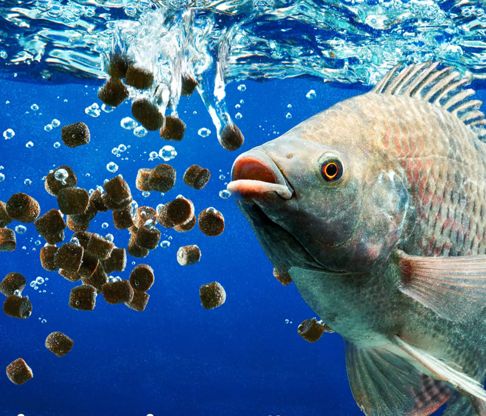

Tilápia do Rio Nilo


INFORMAÇÕES SOBRE O ANIMAL
- Nome Científico: Oreochromis niloticus
Linnaeus, 1758 - Nome Popular: Tilápia do Rio Nilo
- Tem Risco de Extinção?: Atualmente, a Tilápia do Rio Nilo não está ameaçada de extinção. É amplamente cultivada e distribuída, mas como qualquer espécie introduzida, pode ter impactos ambientais em alguns ecossistemas.
Classificação Biológica
Domínio: Eukaryota
Reino: Animalia
Filo: Chordata
Classe: Actinopterygii
Ordem: Cichliformes
Família: Cichlidae
Gênero: Oreochromis
Espécie: O. niloticusHábitos Alimentares
- Nutrição: Heterotrófico
- Dieta Geral: A Tilápia do Rio Nilo é uma espécie onívora e se alimenta de uma ampla variedade de alimentos, incluindo algas, plantas aquáticas, pequenos invertebrados e zooplâncton. Em cultivo, a dieta pode ser suplementada com ração formulada.
- Principais Tipos de Alimentos
Plantas e Algas:
A tilápia é conhecida por sua capacidade de consumir grandes quantidades de algas e matéria vegetal, o que pode ajudar na manutenção da qualidade da água em ambientes aquáticos.
Invertebrados:
Consome pequenos invertebrados aquáticos, como insetos e crustáceos, que complementam sua dieta. - Vertebrados:
A Tilápia do Rio Nilo pode ocasionalmente consumir pequenos peixes e outros pequenos vertebrados que encontra em seu habitat. - Outros Alimentos:
Em ambientes de cultivo, a tilápia pode ser alimentada com ração composta de ingredientes vegetais e proteínas para garantir um crescimento adequado. - Métodos de Alimentação:
A Tilápia do Rio Nilo usa sua boca para triturar e engolir alimentos. Em ambientes naturais, ela frequentemente se alimenta de maneira oportunista, aproveitando qualquer recurso disponível. - Impactos Ambientais:
Quando introduzida em novos habitats, a Tilápia do Rio Nilo pode competir com espécies nativas por recursos e alterar a estrutura das comunidades aquáticas, o que pode ter efeitos ecológicos negativos. Morfologia Básica do Corpo
Cabeça e Boca:
A cabeça da Tilápia do Rio Nilo é relativamente grande e arredondada. Possui uma boca ampla adaptada para triturar alimentos vegetais e invertebrados.
Olhos:
Os olhos são grandes e posicionados lateralmente, proporcionando uma boa visão periférica.
Corpo:
O corpo é robusto e comprimido lateralmente, com escamas pequenas e um padrão de coloração que varia de prateado a verde-oliva.
Membros:
As nadadeiras são bem desenvolvidas, com nadadeiras dorsais e peitorais que ajudam na locomoção e na estabilidade na água.Tamanho Médio e Dimensões Gerais
Comprimento:
A Tilápia do Rio Nilo pode atingir comprimentos de até 60 cm em ambientes naturais, mas em cativeiro, o tamanho médio é geralmente menor.
Peso:
O peso pode variar entre 1 a 3 kg, com indivíduos maiores atingindo até 5 kg.- Dimorfismo Sexual:
Os machos e fêmeas são semelhantes em aparência, mas os machos tendem a ser um pouco maiores e mais robustos que as fêmeas. Em algumas fases da reprodução, as diferenças podem se tornar mais evidentes. Aspectos Relacionados a Camuflagem
- Coloração:
A coloração da Tilápia do Rio Nilo varia do prateado ao verde-oliva, com padrões que ajudam a camuflar o peixe em ambientes aquáticos naturais, como rios e lagos. Em água mais clara, o peixe pode ter uma coloração mais prateada, enquanto em água turva, tende a ser mais escuro. - Textura da Pele:
A pele da Tilápia do Rio Nilo é coberta por escamas pequenas e lisas, que ajudam a reduzir a fricção na água e contribuem para a proteção contra parasitas e lesões. - Comportamento de Camuflagem:
A Tilápia do Rio Nilo usa sua coloração natural para se misturar com o ambiente aquático, ajudando a evitar predadores e se aproximar das presas. Comportamento Geral
A Tilápia do Rio Nilo é geralmente um peixe de comportamento tranquilo e adaptável. É uma espécie sociável que pode formar cardumes em ambientes naturais. No cultivo, ela se adapta bem a diferentes condições e pode ser criada em uma variedade de sistemas aquáticos.- Estratégias de Caça:
A Tilápia do Rio Nilo usa sua visão para localizar alimentos e é conhecida por sua capacidade de forragear eficientemente em diferentes tipos de habitats aquáticos. - Defesa:
- Resistência Ambiental: A Tilápia do Rio Nilo é conhecida por sua resistência e capacidade de se adaptar a diferentes condições ambientais, incluindo variações de temperatura e qualidade da água.
- Reprodução:
- A Tilápia do Rio Nilo é uma espécie que se reproduz de forma prolífica. Ela constrói ninhos em substratos rasos e a fêmea pode depositar uma grande quantidade de ovos, que são incubados na boca da mãe até a eclosão.
Principais Predadores da Espécie
- Em seu habitat natural, a Tilápia do Rio Nilo enfrenta predadores como grandes peixes carnívoros e aves aquáticas. Em ambientes de cultivo, os predadores podem incluir animais selvagens que ocasionalmente invadem os sistemas de aquicultura.
- Outros Peixes: Peixes maiores, como predadores nativos, podem se alimentar de tilápias.
- Aves Aquáticas: Algumas aves aquáticas, como garças e pelicanos, também são conhecidas por predar tilápias.
Área de Ocorrência
- África: A Tilápia do Rio Nilo é nativa da África e é encontrada em vários rios e lagos do continente, incluindo o Nilo e seus afluentes.
- Introdução Global: Devido ao seu valor econômico e à sua capacidade de adaptação, a Tilápia do Rio Nilo foi introduzida em muitos outros países ao redor do mundo, incluindo América Latina e Ásia.
- Mapa de Ocorrência Global
Curiosidades
- Importância Econômica: A Tilápia do Rio Nilo é uma das espécies de peixe mais cultivadas no mundo, especialmente na aquicultura, devido ao seu crescimento rápido e sabor agradável.
- Adaptabilidade: Sua capacidade de viver em uma ampla gama de condições ambientais faz da Tilápia do Rio Nilo uma espécie valiosa para a pesquisa em aquicultura e gestão de recursos hídricos.
- Impactos Ambientais: Embora seja uma espécie útil para cultivo, sua introdução em ambientes fora de seu habitat natural pode causar desequilíbrios ecológicos e competição com espécies nativas.

Tilápia do Rio Nilo alimentando-se de ração.